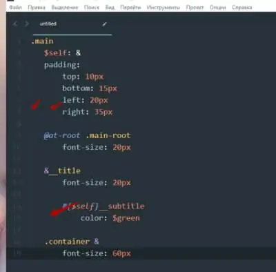

Препроцессор SASS: пишем стили просто и быстро
Препроцессор SASS: пишем стили просто и быстро
Июн 12, 201818 468вHtml5, Css310
Всем привет! Как быстро летит время. Я даже не заметил, как я перешел от написания стилей с обычного Css на препроцессор Sass. А ведь раньше не понимал — что за Sass, для чего он нужен, это наверно для супер продвинутых профи в верстке. Да, использование препроцессоров это шаг на новый уровень в веб-разработке, но здесь ничего страшного и сложного нет и вы убедитесь в этом сами, дочитав данную статью до конца.
И так, чем хорош препроцессор и конкретно Sass? Я сразу скажу, что есть и другие, такие, как Less, Stylus и др. Все они работают по одному принципу, но у каждого свои особенности. Sass получил большую популярность у профессионалов в следствие чего изучение значительно упрощается. Просто чем популярнее технология, тем больше сообщество и тем более развернута документация.
Препроцессоры созданы для того, чтобы избавить разработчика от большинства рутинных задач при написании кода, тем самым повысив скорость и качество работы. Помимо CSS-препроцессоров существуют также и HTML-препроцессоры, например, Pug (Jade).
Структура статьи [скрыть]
Разработчиком Sass является француз Hugo Giraudel, проживающий в Германии с определенного времени. Естественно документация на английском языке, но я лично в ней неплохо ориентируюсь (важно знать технический английский). Но также есть перевод и на русский. Я бы советовал все же английскую версию, это для того, чтобы привыкать и изучать все глубже английский. Но русская тоже ничем не хуже.
В качестве программного обеспечения для компиляции Sass в Css я использую плагин Sass для таск-менеджера Gulp. Вообще Sass является приложением (Gem) языка Ruby. Поэтому, если вы хотите обойтись без Gulp, то для компиляции в Css вам необходимо будет установить платформу языка программирования Ruby. Я не буду сейчас показывать как это делается, можете почитать об этом на официальном сайте.
Сразу отмечу, что существует 2 синтаксиса написания кода: Sass и Scss.
Синтаксис Sass незначительно отличается от Scss. Scss похож больше на обычный код Css, а в Sass опущены фигурные скобки и точка с запятой между правилами. Также существует различие в написании некоторых функций и надо быть внимательным в том, какой синтаксис вы выбираете. Расширения файлов для Sass — *.sass, а для Scss — *.scss. Синтаксис Sass он более старый, а Scss появился позже, чтобы упростить изучение для новичков. Я сам начинал изучение данного препроцессора именно на Scss, так было проще его понять. Сейчас же я перешел на Sass, для меня он более удобен.
Если говорить о Sass, то его структура кода строится на основе отступов (ведь фигурных скобок в нем нет) и здесь следует быть внимательным, так как в качестве отступа может выступать, как табулятор (TAB — 4 пробела), так и обычные пробелы (обычно это двойной пробел). Я всегда использую табулятор.
Помните! Если вы используете табулятор в качестве отступа, то пробелы следует исключить, чтобы везде было одинаково. И наоборот — если используете пробелы, то табулятор следует исключить. Иначе, компилятор выдаст ошибку.
.maincontent
.main-title
font-size: 30px
font-weight: 700
margin: 0 0 30px
.description
margin-bottom: 30px
p
color: #444444
font-size: 16px
line-height: 22px
.maincontent {
.main-title {
font-size: 30px;
font-weight: 700;
margin: 0 0 30px;
}
.description {
margin-bottom: 30px;
p {
color: #444444;
font-size: 16px;
line-height: 22px;
}
}
}
В большинстве редакторов кода (например, Sublime Text) есть разметка отступов в виде полос, что не дает нам запутаться. В примерах ниже я буду использовать синтаксис Sass.

Вот чем мне приглянулся Sass с самого начала, так это как раз вложенностью css-правил одних в другие. Это здорово экономит время, а код получается структурируемым и легкочитаемым. Например, если мы хотим написать стили элементам определенного родительского контейнера, то нам в Css необходимо каждый раз указывать родительский класс, например вот так:
.main .title {
font-size: 30px;
color: #444;
}
.main .subtitle {
font-size: 20px;
}
.main .description {
font-size: 14px;
margin-bottom: 30px;
}
То есть мы везде указываем родительский класс .main, а это в свою очередь не совсем удобно. Используя Sass, можно записать следующим образом:
.main {
.title {
font-size: 30px;
color: #444;
}
.subtitle {
font-size: 20px;
}
.description {
font-size: 14px;
margin-bottom: 30px;
}
}
.main
.title
font-size: 30px
color: #444
.subtitle
font-size: 20px
.description
font-size: 14px
margin-bottom: 30px
Согласитесь так смотрится намного аккуратнее, да и писать код можно быстрее, ведь родительский класс .main мы пишем всего один раз. Если вы хотите повторить за мной, не устанавливая Ruby и всякое подобное ПО можно воспользоваться онлайн-компилятором для демонстрации.
Помимо вложенности правил в Sass существует возможность вложенности свойств. Например, вот как можно записать значения margin:
.main
.title
margin:
top: 10px
right: 15px
bottom: 10px
left: 15px
.main .title {
margin-top: 10px;
margin-right: 15px;
margin-bottom: 10px;
margin-left: 15px;
}
Привязка к селектору или конкатенация — знак &
Написание нашего кода можно ускорить и сделать его еще компактнее, применив конкатенацию (соединение) посредством символа — &. Как это работает? Например, у нас есть такие классы, как: .main-title, .main-subtitle, .main-description. В Sass данные классы можно записать следующим образом:
Sass
.main
&-title
font-size: 30px
color: #444
&-subtitle
font-size: 20px
&-description
font-size: 14px
margin-bottom: 30px
Css
.main-title {
font-size: 30px;
color: #444;
}
.main-subtitle {
font-size: 20px;
}
.main-description {
font-size: 14px;
margin-bottom: 30px;
}
С помощью символа & мы соединяемся к корневому классу, то есть в данном случае нет необходимости постоянно повторять корень .main. В тоже время следует иметь ввиду, что мы не создали дочерние элементы.
Читайте также: CSS анимация на сайте посредством библиотеки Animate.css
Вот еще пример:
Sass
// Ссылка
a
color: red
&:hover
color: blue
// Псевдолементы
.main
&::before
content: ""
display: block
font-size: 20px
&::after
content: ""
display: block
font-size: 30px
Css
/* Ссылка */
a {
color: red;
}
a:hover {
color: blue;
}
/* Псевдоэлементы */
.main::before {
content: "";
display: block;
font-size: 20px;
}
.main::after {
content: "";
display: block;
font-size: 30px;
}
Иногда нужно указать цепочку селекторов до текущего элемента. Можно конечно вынести его в корень, но чтобы не нарушать вложенность можно написать следующим образом:
Sass
.main
.container &
width: 700px
Css
.container .main {
width: 700px
}
Переместив & после селектора, мы поменяли порядок стыковки, т. е. класс .container в данном случае является родительским.
Привязка к родительскому селектору, но на уровнь выше
Выше для примера я демонстрировал Sass код:
Sass
.main
&-title
font-size: 30px
color: #444
&-subtitle
font-size: 20px
&-description
font-size: 14px
margin-bottom: 30px
Теперь представьте, что в блоке .main-title существует еще один элемент которому нужно явно указать стили, используя всю цепочку родителей. Я долго время просто указывал корневое название (в данном случае — .main), но это не очень удобно. Я стал ковырять документацию Sass и нашел решение. На самом деле все просто — нам необходимо объявить ссылку на родителя и использовать ее, там, где нужно.
Вот так я делал раньше:
.main
&-title
font-size: 30px
color: #444
.main__icon // указываем корень .main, иначе, если использовать & будет стыковка к .main-title
color: #444
width: 20px
&-subtitle
font-size: 20px
&-description
font-size: 14px
margin-bottom: 30px
А теперь можно сделать так:
.main
$self: & // ссылка на родителя
&-title
font-size: 30px
color: #444
#{$self}__icon // вместо & используем ссылку на родителя
color: #444
width: 20px
&-subtitle
font-size: 20px
&-description
font-size: 14px
margin-bottom: 30px
Если заметили мы объявили ссылку на родителя — $self: &. Мне это чем-то напоминает ссылку на объект (this), который вызвал событие в javaScript. Теперь в нужно месте мы можем просто его вызвать #{$self}. Вот оказывается как все просто, а я голову ломал и думал, что нет решения этой проблемы в Sass.
Css
.main-title {
font-size: 30px;
color: #444;
}
.main-title .main__icon {
color: #444;
width: 20px;
}
.main-subtitle {
font-size: 20px;
}
.main-description {
font-size: 14px;
margin-bottom: 30px;
}
Зачастую бывает такое, что несколько элементов имеют одну базу стилей, но отличаются между собой лишь несколькими правилами. Возьмем к примеру кнопки. Если брать один размер кнопок, то они могут отличаться между собой только цветом: красные, зеленые, серые и т.д. Если использовать чистый Css, то придется в базовых стилях через запятую указывать все цвета кнопок или создать базовый класс. Но в Sass это делается намного проще:
%button
background-color: #666
border: 1px solid #666
padding: 0 20px
font-size: 15px
line-height: 40px
height: 40px
.button-green
@extend %button
background-color: green
border-color: green
.button-red
@extend %button
background-color: red
border-color: red
Css
.button-green, .button-red {
background-color: #666;
border: 1px solid #666;
padding: 0 20px;
font-size: 15px;
line-height: 40px;
height: 40px;
}
.button-green {
background-color: green;
border-color: green;
}
.button-red {
background-color: red;
border-color: red;
}
Шаблоном выступает в данном случает селектор %button (об этом говорит знак — %). Это удобно тем, что сам селектор шаблона нигде не участвует, а его стили наследуются другими селекторами посредством директивы — @extend. Данный шаблон можно использовать сколько угодно раз, сокращая тем самым количество кода.
В Sass, как и в языках программирования имеют место быть такие возможности, как: создание переменных, арифметические операции (сложение, вычитание, деление, умножение и т.д.), итерации (циклы), функции (миксины) и многое другое. То есть Sass это своего рода некий язык программирования, который призван опять таки упростить написание кода и ускорить работу в разы.
Переменная в Sass начинается со знака $, а имя пишется латиницей, например: $color. Следует отметить, что знаки: «—» и «_» взаимозаменяемы. К примеру, если назвали $color-red, то можно вызвать и $color_red. Определяется переменная следующим образом: $название: значение, например: $color: #f6f6f6.
Переменная объявленная вне каких либо уровней вложенности, доступна глобально, т.е. можно использовать везде. Если же вы определили переменную в каком либо уровне вложенности селектора, то она будет доступна только на данном уровне. Чтобы она работала глобально во всем документе необходимо указать ключевое слово !global.
.title
$font-size: 10px !global
font-size: $font-size
.subtitle
font-size: $font-size
Вообще, переменные это замечательная вещь, стоит объявить и занести значение, а далее можно использовать сколько угодно и где угодно. Например, мы можем определить цвета, дав им определенные имена, размер шрифта, семейство шрифтов и т.д. и вообще любые значения.
Данную директиву мы затронули выше, когда изучали шаблон-заготовку. Закрепим еще раз знания. С помощью @extend мы можем скопировать правила любого селектора. Например, при верстке может быть так, что элемент «А» и элемент «Б» могут быть схожи по внешнему виду. В данном случае можно написать правила элементу «А», а для «Б» просто скопировать стили элемента «А», слегка переопределив нужные свойства.
Sass
.block_a
background-color: #cccccc
border: 5px solid #999999
padding: 20px
font-size: 30px
height: 150px
width: 150px
.block_b
@extend .block_a
padding: 15px
Css
.block_a, .block_b {
background-color: #cccccc;
border: 5px solid #999999;
padding: 20px;
font-size: 30px;
height: 150px;
width: 150px;
}
.block_b {
padding: 15px;
}
В данном примере мы сверстали 2 одинаковых квадрата. У квадрата «Б» мы переопределили только отступ padding: 15px. Вот так работает @extend. Я довольно часто пользуюсь данной директивой.
Данная директива позволяет объединять несколько файлов стилей в один. Это очень удобно, тем более, если проект большой. Не стоит путать с директивой, которая существует в Css — @import. В Css обязательным атрибутом является — url().
Читайте также: Адаптивный дизайн сайта - так важно ли сегодня? Встречайте адаптивный дизайн блога Zaurmag.Ru
На самом деле удобнее писать стили в разных файлах и предназначение у каждого свое. Например, весь каркас страницы можно разделить на регионы: header.sass, sidebar.sass, footer.sass. Собрать все можно в главном файле main.sass, как раз используя @import. Файлы регионов можно указать также через нижнее подчеркивание в начале имени файла, например так: _header.sass, _sidebar.sass, _footer.sass. Такие файлы называются фрагментами. При импорте фрагментов не обязательно указывать расширение файла.
Простой импорт
@import "header.sass"
@import "sidebar.sass"
@import "footer.sass"
Импорт фрагментов
@import "header"
@import "sidebar"
@import "footer"
Файлы фрагментов могут быть с расширениями: *.sass, *.scss или *.css. Например, главный файл может быть с расширением *.sass, а шапка сайта, к примеру с расширением *.scss. То есть не важно какое у вас расширение главного файла. Следует отметить, что при импорте переносятся все переменные и миксины (о них поговорим ниже) в главный файл, в который происходит импорт.
Также, можно указать импорт нескольких файлов через запятую: @import «header», «sidebar», «footer».
Имейте ввиду, что импорт происходит в том месте, где вы указали директиву @import. Обычно это делают в начале документа.
Директива @at-root говорит сама за себя и если переводить на русский, то будет звучать так — «от корня». Иными словами мы переносим селектор в корень, отменяя цепочку родительских селекторов. Тут конечно можно задать вопрос — «А зачем нужна эта директива, если можно перенести селектор в корень в ручную?». Ответ прост — удобство написания кода, не нарушая структуру. Когда вы научитесь работать с Sass в полной мере вы это поймете.
.main
&-title
font-size: 30px
color: #444
@at-root
.main__icon
color: #444
width: 20px
Css
.main-title {
font-size: 30px;
color: #444;
}
.main__icon {
color: #444;
width: 20px;
}
Управляющие директивы и выражения
Данная директива выполняет стили, если выражение, заключенное в ней возвращает любое значение кроме false и null.
Sass
$color: green
.header
@if $color == green
background-color: green
@else if $color == blue
background-color: blue
@else
background-color: #f6f6f6
Css
.header {
background-color: green;
}
Те, кто знаком хотя бы с основами языка программирования (например, javaScript или Php) разобраться будет не сложно. Здесь суть та же самая, главное знать синтаксис написания кода.
В языке программирования (опять же в Javascript или Php) с помощью For можно задать цикл. В Sass данная директива выполняет тоже самое — создает цикл. Для каждой итерации (повторения) используется переменная-счетчик, которая изменяет данные вывода.
Директива имеет 2 формы написания: 1. @for $var from <начало> through <конец> и 2. @for $var from <начало> to <конец>. Если вы хотите, чтобы последняя цифра была включена в цикл, то используйте «through«. Давайте рассмотрим пример:
Sass
@for $i from 1 to 6
.elem-item-#{$i}
background-image: url("images/image-#{$i}.jpg")
Css
.elem-item-1 {
background-image: url("images/image-1.jpg");
}
.elem-item-2 {
background-image: url("images/image-2.jpg");
}
.elem-item-3 {
background-image: url("images/image-3.jpg");
}
.elem-item-4 {
background-image: url("images/image-4.jpg");
}
.elem-item-5 {
background-image: url("images/image-5.jpg");
}
Для указания конечного значения я использовал ключевое слово «to«. При таком раскладе цикл заканчивается на цифре — 5. Обратите внимание насколько компактным выглядит код Sass.
Директива @each также, как и @for выводит значения в цикле и удобен тем, что помимо цифр можно перебирать конкретные значения. Давайте возьмем вышеприведенный цикл и изменим его на какие либо значения.
Sass
@each $bgItem in animal, lake, sea, landscape, nature
.elem-item-#{$bgItem}
background-image: url("images/image-#{$bgItem}.jpg")
Css
.elem-item-animal {
background-image: url("images/image-animal.jpg");
}
.elem-item-lake {
background-image: url("images/image-lake.jpg");
}
.elem-item-sea {
background-image: url("images/image-sea.jpg");
}
.elem-item-landscape {
background-image: url("images/image-landscape.jpg");
}
.elem-item-nature {
background-image: url("images/image-nature.jpg");
}
В данном случае не создается переменная-счетчик, а количество итераций зависит от количества созданных значений после ключевого слова «in«. Значения выводятся через переменную (в данном примере — $bgItem), название которой может быть произвольным.
Миксины (примеси) — это своего рода функция, как в языке программирования, которая призвана избавить от повторяющегося кода. Миксины могут содержать целые фрагменты стилей, разрешенные в Sass. Давайте рассмотрим пример, для большей наглядности.
@mixin align-center
position: absolute
top: 50%
left: 50%
transform: translate(-50%, -50%)
.container
@include align-center
Создается миксин директивой @mixin, далее через пробел следует имя миксина, а также опционально передаваемые параметры. Сразу отмечу, что знаки дефиса (-) и нижнего подчеркивания (_) в имени миксина взаимозаменяемы. Миксин может содержать в себе не только правила, но и селекторы. Выше я привел пример элементарного миксина без параметров.
Вызывается миксин директивой @include и далее через пробел указываем имя созданного миксина. В примере выше — это центрирование блока по оси X и по оси Y с помощью абсолютного позиционирования. Если такое приходится применять часто, то согласитесь легче вызвать просто миксин, нежели писать стили центровки снова и снова.
Теперь давайте рассмотрим миксин с параметрами (аргументами).
Sass
@mixin border($width, $color)
border:
width: $width
style: solid
color: $color
.square
@include border(2px, #ccc)
Css
.square {
border-width: 2px;
border-style: solid;
border-color: #ccc;
}
Как видим, после названия миксина в скобках мы задаем аргументы, в данном случае — это ширина бордюра и цвет. Это простейший миксин, который я привел для наглядности. На практике же можно встретить более сложные миксины с использованием различных условий и переменных. Но не будем сейчас все усложнять, надо всегда начинать с чего-то малого и простого, а потом уже двигаться по мере продвижения вверх.
На этом я хочу завершить свой небольшой обзор препроцессора Sass. Почему небольшой? Да потому что это далеко не все, что я вам поведал. Вообще, используя вышеизложенное, вы можете смело уже сейчас начать пользоваться Sass вместо Css. Более подробнее вы сможете изучить Sass, прибегнув к документации, которую я приводил выше.
Ну что ж, всем спасибо за внимание! Как всегда, вопросы задаем в комментариях и подписывайтесь либо на телеграм канал, либо на рассылку по email (форма в сайдбаре справа), чтобы не пропустить ничего интересного.
До встречи в других моих постах…
 (5 оценок, среднее: 5,00 из 5)
(5 оценок, среднее: 5,00 из 5)

Заур Магомедов
Занимаюсь созданием сайтов с 2009 года. Постоянно обучаюсь и совершенствуюсь, шагая в ногу со временем. Владею такими навыками, как: Html5, Css3, JavaScript, Vue, Git, БЭМ, Gulp.
Заказать верстку Заказать сайт
Читайте также:
Другие материалы той же категории
Анимированная кнопка для формы на чистом CSS
10 комментариев к статье "Препроцессор SASS: пишем стили просто и быстро"
Янв 15, 2021 20:17
Спасибо! Хороший материал: информативно, кратко — все по делу и доступным языком — с большим уважением к новичкам. Привет из Томска!
Янв 15, 2021 20:19
Спасибо! Обратный привет из Каспийска!
Яна
Фев 14, 2019 18:53
Спасибо! Это было офигенно!
Фев 14, 2019 21:25
Июл 27, 2018 20:55
Спасибо. Крутяцкий текст. Легко заходит.
SASS-ом пользуюсь все чаще. Кое что вычитал в документации и применял. У вас более подробно и доступно расписано)
Спасибо)
Июл 28, 2018 00:30
Не за что! Сам своей инструкцией частенько пользуюсь, а то забывается время от времени ))…
Евгений
Июн 26, 2018 18:16
Не по теме… Почистите раздел «РЕКОМЕНДУЮ!» — многие курсы давно сняты с продажи. Как-то «не солидно»
Июн 26, 2018 18:20
Да, я планирую немного поменять сайт. Вот походу и буду снимать устаревшие материалы. Спасибо!
Иван Доброславин
Июн 26, 2018 13:59
Заур, здравствуйте. Было бы интересно узнать, какой программой пользуетесь для написания css, пользуетесь ли gulp?
Июн 26, 2018 14:01
Программу для написания кода я использую phpStorm + Sublime 3. Gulp, да я использую. Я ведь писал уже об этом.
Ваш e-mail не будет опубликован. Обязательные поля помечены *
Ваше имя *
Ваше email *
Ваш сайт
Если вы хотите вставить в текст комментария код HTML, CSS, PHP, JavaScript, то обрамите код в соответствии необходимыми тегами:
Получать новые комментарии по электронной почте. Вы можете подписаться без комментирования.
Отправить
�